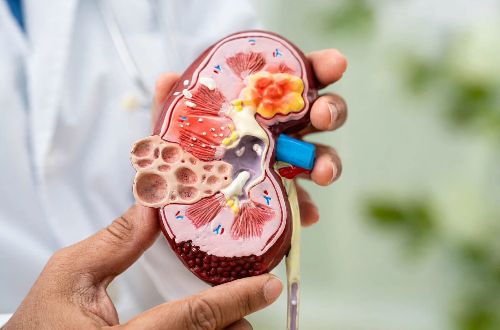

Mari mengenal penyakit gagal ginjal kronis, memahami gejalanya, serta mengetahui cara menjaga kesehatan ginjal sejak dini.
2Buah Ginjal
5Stadium Penyakit
100%Bisa Dicegah

Sayangi Ginjalmu
Ginjal sehat, hidup lebih berkualitas. Klik untuk mulai belajar →
Selamat Datang di Kidney Journey
Teman perjalananmu untuk memahami kesehatan ginjal
Kidney Journey merupakan website edukasi kesehatan yang memberikan informasi mengenai penyakit gagal ginjal kronis. Melalui website ini, masyarakat diharapkan dapat memahami fungsi ginjal, mengenali faktor risiko, mengetahui gejala, serta menerapkan pola hidup sehat untuk menjaga kesehatan ginjal.
1
Kenali
Kenali apa itu gagal ginjal kronis
2
Waspada
Kenali gejala & penyebabnya
3
Cegah
Terapkan pola hidup sehat
4
Sehat
Hidup lebih berkualitas
Kenali Gejalanya
Pelajari tanda-tanda yang dapat muncul pada penyakit ginjal kronis.
Mengenal penyakit gagal ginjal kronis lebih dekat.
Apa Itu Gagal Ginjal Kronis?
Gagal ginjal kronis atau penyakit ginjal kronis merupakan kondisi ketika fungsi ginjal mengalami penurunan secara bertahap dalam jangka waktu yang lama. Kondisi ini dapat menyebabkan ginjal tidak mampu menyaring zat sisa metabolisme dan kelebihan cairan dari dalam tubuh secara optimal.
Fungsi Ginjal
Menyaring darah dan membuang zat sisa metabolisme.
Mengatur keseimbangan cairan dan elektrolit tubuh.
Membantu mengatur tekanan darah.
Membantu pembentukan sel darah merah.
Menjaga keseimbangan mineral untuk kesehatan tulang.
Tahapan Penyakit Ginjal Kronis
Penyakit ginjal kronis umumnya dibagi menjadi lima stadium berdasarkan nilai laju filtrasi glomerulus atau eGFR.
Stadium 1: Fungsi penyaringan masih normal atau tinggi, tetapi terdapat tanda kerusakan ginjal.
Stadium 2: Penurunan fungsi ginjal ringan.
Stadium 3: Penurunan fungsi ginjal sedang.
Stadium 4: Penurunan fungsi ginjal berat.
Stadium 5: Gagal ginjal atau penurunan fungsi ginjal sangat berat.
Gejala Gagal Ginjal Kronis
Kenali tanda-tanda gangguan fungsi ginjal.
Gejala yang Perlu Diketahui
Pada tahap awal, penyakit ginjal kronis sering kali tidak menimbulkan gejala yang jelas. Gejala biasanya mulai terlihat ketika fungsi ginjal sudah mengalami penurunan lebih lanjut.
Mudah Lelah
Tubuh terasa lemah dan mudah lelah meskipun tidak melakukan aktivitas berat.
Perhatian: Gejala tersebut tidak selalu berarti seseorang mengalami penyakit ginjal kronis. Pemeriksaan oleh tenaga kesehatan diperlukan untuk mengetahui penyebabnya.
Penyebab dan Faktor Risiko
Kenali kondisi yang dapat memengaruhi kesehatan ginjal.
Penyebab Gagal Ginjal Kronis
Penyakit ginjal kronis dapat disebabkan oleh berbagai kondisi kesehatan yang mengakibatkan kerusakan ginjal secara bertahap.
1. Diabetes Melitus
Kadar gula darah yang tinggi dalam jangka panjang dapat merusak pembuluh darah kecil di ginjal sehingga kemampuan penyaringan darah menurun.
Pemeriksaan fungsi ginjal secara berkala penting dilakukan, terutama bagi orang yang memiliki diabetes, hipertensi, atau faktor risiko penyakit ginjal lainnya.
Penanganan Gagal Ginjal Kronis
Ketahui pemeriksaan dan pilihan penanganannya.
Pemeriksaan Penyakit Ginjal
Pemeriksaan darah untuk mengetahui kadar kreatinin dan memperkirakan eGFR.
Pemeriksaan urine untuk mengetahui adanya albumin atau protein.
Pemeriksaan tekanan darah.
Pemeriksaan pencitraan, seperti USG ginjal, bila diperlukan.
Pilihan Penanganan
Pengobatan
Dokter dapat memberikan obat untuk mengendalikan tekanan darah, diabetes, dan komplikasi penyakit ginjal.
Penanganan penyakit ginjal kronis disesuaikan dengan stadium, penyebab, kondisi pasien, dan hasil pemeriksaan. Konsultasikan pilihan penanganan dengan dokter.
Konsultasi Kesehatan
Jangan ragu untuk mencari informasi dan bantuan kesehatan.
Formulir Konsultasi
Formulir berikut merupakan contoh tampilan konsultasi edukasi. Untuk pemeriksaan dan diagnosis, silakan datang ke fasilitas pelayanan kesehatan.
Kontak dan Sumber Informasi
Temukan informasi kesehatan ginjal dari sumber tepercaya.
Kontak Pengelola Website
Silakan hubungi pengelola website melalui kontak berikut untuk pertanyaan seputar edukasi di website ini:
Jam LayananSenin - Jumat, 08.00 - 16.00 WIB Balasan pesan dapat membutuhkan waktu 1x24 jam pada hari kerja.
Informasi Kontak LainnyaUntuk konsultasi medis dan keadaan darurat, silakan langsung datang ke fasilitas pelayanan kesehatan terdekat atau hubungi layanan darurat. Website ini hanya untuk edukasi dan bukan pengganti diagnosis dokter.
Sumber Informasi
Kementerian Kesehatan RI
Sumber informasi kesehatan dari pemerintah Indonesia.